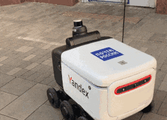

- Машинное обучение — это подмножество искусственного интеллекта, в котором компьютеры учатся на данных и совершенствуются, при этом комьютеры не программируются напрямую.
- Отличие от традиционного программирования: вместо написания конкретных инструкций, создается модель, которая самостоятельно находит закономерности в данных.
- Позволяет решать задачи, для которых трудно или невозможно создать алгоритм в явном виде (распознавание речи, компьютерное зрение, анализ естественного языка).
Специалист по машинному обучению
Профессия настоящего и будущего
Что такое машинное обучение
Исторические этапы развития
1940-1950-е
Зарождение идей: Первые теоретические работы
в области нейронных сетей, создание
перцептрона.
1960-1970-е
Ранние исследования: Разработка основных
алгоритмов и концепций.
1970-1980-е
Период «зимы ИИ»: Снижение интереса из-за
ограниченности вычислительных ресурсов.
1990-е
Возрождение интереса: Развитие алгоритмов
машинного обучения с высокой эффективностью.
2000-е - н.в.
Современный этап: Прорыв в области глубокого
обучения, распространение нейронных сетей.
Компетенции специалиста
Технические компетенции
- Программирование (Python, R, Java)
- Работа с данными (сбор, очистка, трансформация)
- Разработка и внедрение моделей ML
- Знание инфраструктуры больших данных
- DevOps и MLOps
Математические компетенции
- Линейная алгебра
- Математический анализ
- Дифференциальные уравнения
- Теория вероятностей и статистика
- Методы оптимизации
- Теория информации
Прочие навыки
- Аналитическое мышление
- Коммуникативные навыки
- Доменные знания
- Исследовательские навыки
- Понимание этических аспектов
Типы специалистов ML
Инженер по машинному обучению
Разрабатывает и внедряет модели ML в производственные системы
Исследователь
Разрабатывает новые алгоритмы и методы, проводит эксперименты
Специалист по данным
Применяет методы ML для анализа данных и решения бизнес-задач
Специалист по глубокому обучению
Разрабатывает и применяет нейронные сети и методы глубокого обучения
Специалист по MLOps
Занимается инфраструктурой для непрерывной интеграции и развертывания моделей
Профессиональные обязанности
- Сбор и подготовка данных: определение источников, очистка, преобразование, создание признаков
- Разработка и обучение моделей: выбор алгоритмов, проектирование архитектуры, настройка гиперпараметров
- Оценка и улучшение моделей: выбор метрик, кросс-валидация, анализ ошибок, оптимизация
- Интеграция моделей: внедрение в существующие системы, создание API и сервисов
- Мониторинг и поддержка: отслеживание производительности, выявление проблем, обновление моделей
- Исследования и разработка: изучение новых методов и технологий, проведение экспериментов
- Коммуникация и сотрудничество: взаимодействие с другими командами, презентация результатов
Этические аспекты работы
Конфиденциальность и защита данных
Обеспечение безопасности персональных данных, соблюдение законодательных требований
Справедливость и отсутствие дискриминации
Выявление и устранение предвзятости в моделях
Прозрачность и объяснимость
Разработка интерпретируемых моделей, особенно в критических областях
Ответственность и подотчетность
Определение ответственности за решения, принимаемые моделями
Сферы применения ML
Здравоохранение
- Диагностика заболеваний
- Прогнозирование течения болезни
- Персонализированное лечение
Финансы
- Оценка кредитоспособности
- Выявление мошенничества
- Прогнозирование цен
Розничная торговля
- Анализ поведения потребителей
- Персонализация рекомендаций
- Оптимизация ценообразования
Транспорт и логистика
- Автономное вождение
- Оптимизация маршрутов
- Прогнозирование трафика
Телекоммуникации
- Оптимизация сетевой инфраструктуры
- Прогнозирование нагрузки
- Выявление аномалий
Ключевые проекты и достижения
- Нейронные сети: распознавание лиц, объектов и действий, анализ медицинских изображений
- Обработка естественного языка: машинный перевод, анализ тональности, генерация текста
- Рекомендательные системы: персонализированные рекомендации товаров, контента, услуг
- Медицинская диагностика: анализ медицинских изображений, прогнозирование заболеваний
- Финансовый анализ: прогнозирование динамики рынков, управление рисками
- Автономные транспортные средства: алгоритмы восприятия, планирования, принятия решений
- Генеративные модели: создание реалистичных изображений, видео, музыки, текста
Современное состояние ML
Генеративные модели
Perplexity, Gemini, Stable Diffusion – технологии, создающие тексты, изображения, музыку и видео
Автономные системы
Беспилотные автомобили (Tesla, Waymo), роботы-курьеры и дроны для навигации
Персонализированная медицина
Предсказание заболеваний, анализ медицинских изображений, индивидуальные методы лечения
Этика и регулирование ИИ
Введение законов об искусственном интеллекте (AI Act в ЕС), борьба с deepfake, защита данных

Рынок труда и зарплаты
| Уровень специалиста | Зарплата в месяц |
|---|---|
| Junior ML-инженер | 70 000 - 150 000 руб. |
| Middle/Senior ML-специалист | 200 000 - 400 000 руб. |
| Lead Data Scientist | от 500 000 руб. |

Востребованные навыки
- Python
- TensorFlow/PyTorch
- Scikit-learn
- Работа с большими данными (Big Data)
- NLP (обработка естественного языка)
- Computer Vision
Обучение в сфере ML
Онлайн-курсы
- Coursera
- Stepik
- Яндекс.Практикум
Университетские программы
- Магистратуры по Data Science в МФТИ
- Программы ВШЭ
- Факультеты МГУ
- Кафедра МОАИС на КНиИТе
Соревнования
- Kaggle
- Хакатоны (например, #ERRORHACK)
Стажировки
- Программы для начинающих специалистов в компаниях
Заключение
- Специалист по машинному обучению — это профессионал с комплексными знаниями в программировании, математике, статистике
- Машинное обучение активно развивается и трансформирует множество отраслей
- С развитием вычислительных мощностей и ростом объемов данных роль специалистов по ML будет только возрастать
- Профессия требует постоянного обучения и адаптации к новым технологиям и методам
1 /
13